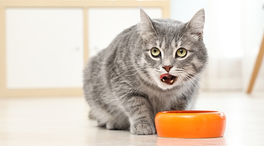
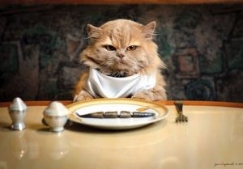
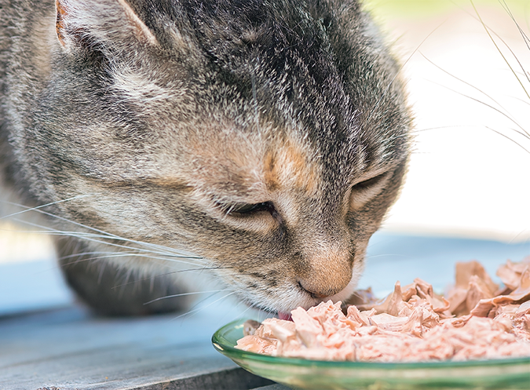
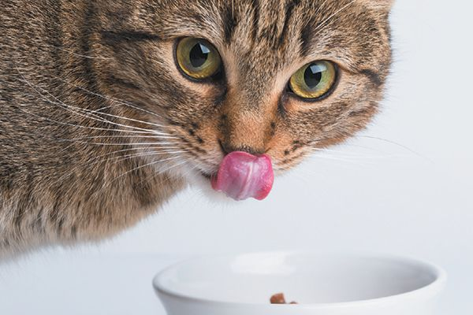
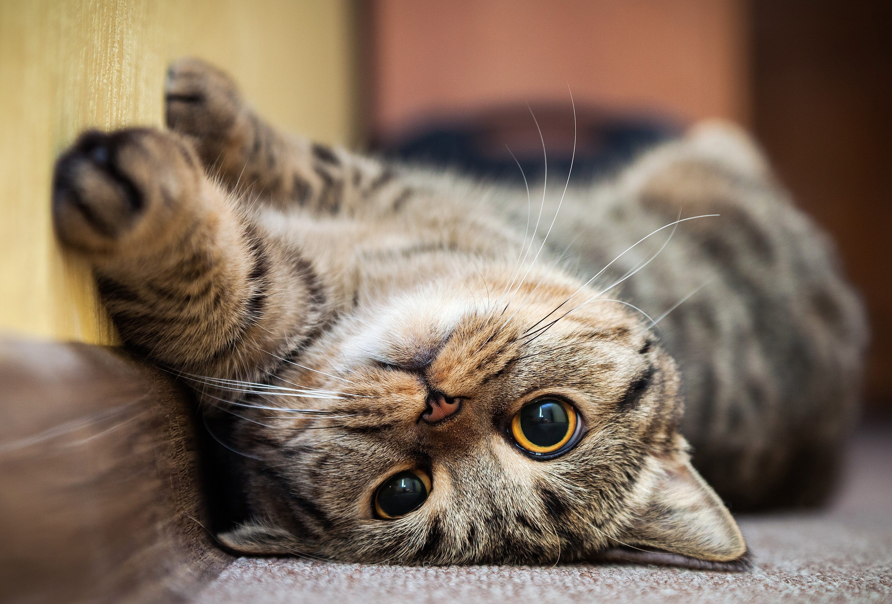

- 
- 

- 
- 
- 
Oleme tihti kuulnud müüti, et kassi toit on piim ja kala, et kassid peavad sööma kõike. Samuti kahjuks arvatakse, et õues käivat kassi ei ole üldse vaja toita, sest kass toidab ennast ise.
Nii nagu inimeste hulgas, leidub ka kasside hulgas selliseid, kelle seedimine piima ei talu ning neid, kellele piim väga sobib. Kassile piima andes tuleks eelkõige jälgida, kuidas kassi keha piimale reageerib - kui kassil on pärast piima söömist kõht lahti, siis piima kassile enam anda ei tohiks. Piima saab asendada muude piimatoodetega, näiteks maitsestamata kohupiim, väherasvane hapukoor või maitsestamata jogurt. Samuti ei tohi vett asendada piimaga, sest kassile ei ole piim mitte jook, vaid söök
Kass, nagu iga teine elusolend, vajab värsket ja kvaliteetset toitu. Tänaval ja õues iseenese hooleks jäetud kass elab ligikaudu viieaastaseks. Koduse ja hästi hoolitsetud lemmikloomana võib kass elada 15-20 aastaseks. Selleks, et saada vajalik kogus kaloreid, peaks õuekass püüdma ja sööma päevas keskmiselt kümme hiirt. Tavaliselt ei piisa püütud jahisaagist kassi energiavajaduse rahuldamiseks. Seega vajab ka peamiselt õues elav kass korralikku toitumist.
Kassidele ei ole keelatud pakkuda kodutoitu. Väga hea valik on näiteks maitsestamata keedetud kana ja kala, aga samuti võib pakkuda toorest liha. Toore liha andmise puhul peab silmas pidama, et töötlemata lihast võib kass saada ussid, seega tuleks kassile anda ussirohtu umbes neli korda aastas. Samuti ei tohi kassitoit olla väga soolane või maitsestatud, sest see ei mõju kassi seedimisele hästi ning võib tekitada kassile tõsiseid tervisekahjustusi.
Kassi kodutoiduks ei sobi inimese toidu ülejäägid. Kassile ei ole tervislikud soolased, vürtsitatud, suitsutatud ja praetud toidud. Mitmed inimesele mõeldud toiduained võivad olla kassi tervisele tõsiselt ohtlikud. Sellisteks toiduaineteks on näiteks sibul, küüslauk ja murulauk, mis vähendavad tema veres punaliblede hulka ning looma organism võib jääda hapnikuvaegusesse. Kass ei tohi süüa ka šokolaadi, sest see erutab kesknärvisüsteemi, kiirendab südame tööd, põhjustab oksendamist ja kõhulahtisust. Kassile on ohtlikud veel sibulapulber, alkohoolsed joogid, pärm, kohv, tee, sool, pipar ja hallitanud toit.
| Kassile sobib | Kassile ei sobi |
|---|---|
|
|
Täiskasvanud kassil peab päevas olema üks suur või kaks-kolm väiksemat söögikorda, kus talle pakutakse niinimetatud pehmet toitu (kassikonserv või kodutoit). Kuni kolmekuused kassipojad peavad sööma pehmet toitu vähemalt neli korda päevas. Kuni kuuekuused vähemalt kolm korda. Kui kassile antakse pehmet toitu, ei tohi lasta sellel toidunõus seista kauem kui paar tundi.
Kuivtoit peab kassile olema kättesaadav kogu aeg, sest kassil on vaja süüa vähe korraga, kuid tihti. Kassi jooginõus peab pidevalt olema puhas vesi, mida tuleb iga päev vahetada, samuti vajab korra päevas uuendamist kuivtoit. Kassi toidunõusid on vaja pesta iga päev. Kassile ei tohi anda koeratoitu, sest nende loomade toitumisvajadused on erinevad ning koeratoiduga jääb kass nälga.
Kassi tervisele on väga hea ja kasulik täisväärtuslik kuivtoit, mida tasub kindlasti osta kas kliinikust või loomapoest. Kvaliteetkrõbinad on küll kallimad kui poetoidud, ent erinevalt marketikrõbinatest ei sisalda nad nn ballasti. Lisaks sisaldavad nad aineid, mida kassi organismil vaja on. Loomaarstide sõnul satub üha enam loomakliinikutesse kasse, kellel on tekkinud tänu marketikrõbinate söömisele rasked neeru- ja põieprobleemid, mis nõuavad kallist ning riskirohket ravi. Eriti oluline on kuivtoidu puhul silmas pidada, et kassil oleks kogu aeg kättesaadav jahe ja puhas joogivesi.
Suurim probleem tubase looma puhul on tema vormis hoidmine. Tavaliselt on steriliseeritud, soojas ja piiratud keskkonnas elaval kassil liikumiseks vähe võimalusi. Sellise passiivsema eluviisiga kassidel on oma kehavormi säilitamine palju raskem kui õues käival kassil.
Esmane soovitus toakassiomanikele on vältida kassi ületoitmist. See võib põhjustada ülekaalulist ja mitmeid teisi terviseprobleeme, sh diabeedi riski suurenemist. Ületoitmine on eriti levinud just selliste omanike seas, kes jätavad kassile terveks päevaks toidu ette. Sellisel juhul on oluline pakkuda kassile täpselt kaalutud kogus toitu, mis vastab tema energia vajadustele. Tubaste kasside jaoks on välja töötatud just nende vajadustele vastavaid toite.